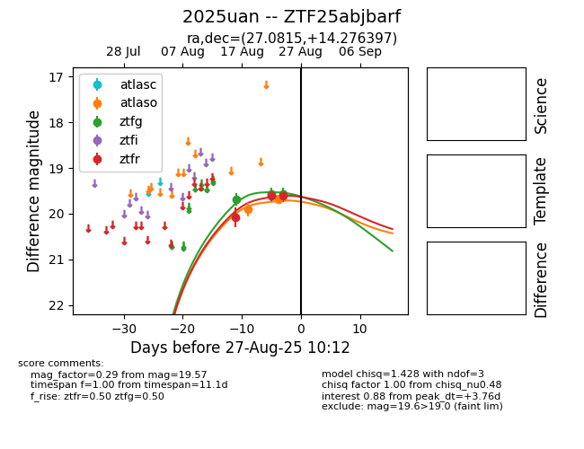

Target 2025uan at 2025-08-26 09:55, see:
FINK: fink-portal.org/ZTF25abjbarf
Lasair: lasair-ztf.lsst.ac.uk/objects/ZTF25abjbarf
ALeRCE: alerce.online/object/ZTF25abjbarf
TNS: wis-tns.org/object/2025uan
YSE: ziggy.ucolick.org/yse/transient_detail/2025uan
alt names
ZTF25abjbarf (ztf,fink)
2025uan (tns,yse)
coordinates:
equatorial (ra, dec) = (27.0815,+14.27640)
galactic (l, b) = (143.1115,-46.35438)
photometry
last ztfg=19.57, ztfr=19.62
3 ztfg, 3 ztfr detections
